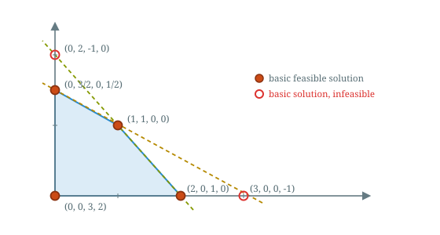
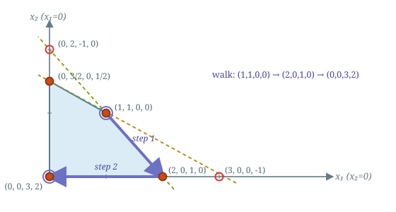
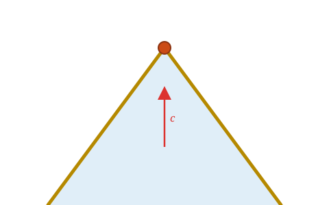
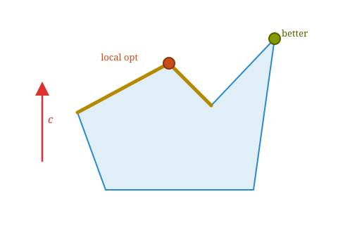

Kevin Shu
An LP in SEF, for example:
| max | $\begin{pmatrix}1 & 2 & 3 & 4\end{pmatrix} x$ |
| such that | $\begin{pmatrix} 1 & 2 & 1 & 0 \\ 1 & 1 & 0 & 1\end{pmatrix} x = \begin{pmatrix} 3 \\ 2\end{pmatrix}$ |
| $x \ge 0$ |
Any LP can be put into SEF with three steps:
A basis is a set of columns of $A$ that are linearly independent, with as many columns as the rank of $A$ (often the number of rows).
For $A = \begin{pmatrix} 1 & 2 & 1 & 0 \\ 1 & 1 & 0 & 1\end{pmatrix}$, a basis is any $2$ linearly independent columns, e.g. \[ \{1,2\},\qquad \{1,3\},\qquad \{3,4\}. \]
We can row reduce $Ax = b$ with respect to a basis to bring those columns to the identity (RREF).
Row reduction with respect to basis $\{1,2\}:$
\[ \begin{pmatrix} \color{blue}1 & \color{blue}2 & 1 & 0 \\ \color{blue}1 & \color{blue}1 & 0 & 1\end{pmatrix} x = \begin{pmatrix} 3 \\ 2\end{pmatrix} \] \[ \downarrow \] \[ \begin{pmatrix} \color{blue}1 & \color{blue}0 & -1 & 2 \\ \color{blue}0 & \color{blue}1 & 1 & -1\end{pmatrix} x = \begin{pmatrix} 1 \\ 1\end{pmatrix} \]A canonical form of an LP with respect to a basis $B$ has two properties:
| max | $\begin{pmatrix} \color{blue}0 & \color{blue}0 & 2 & 4\end{pmatrix} x + 3$ |
| such that | $\begin{pmatrix} \color{blue}1 & \color{blue}0 & -1 & 2 \\ \color{blue}0 & \color{blue}1 & 1 & -1\end{pmatrix} x = \begin{pmatrix} 1 \\ 1\end{pmatrix}$ |
| $x \ge 0$ |
For a given linear system in RREF, there is a unique basic solution where all of the nonbasic variables are equal to 0.
The basic solution is then a basic feasible solution if all of the entries of that solution are nonnegative.
Consider a linear system in RREF with respect to the basis $\{1,2,4\}$:
\[ \begin{pmatrix} \color{blue}1 & \color{blue}0 & -2 & \color{blue}0 \\ \color{blue}0 & \color{blue}1 & 1 & \color{blue}0 \\ \color{blue}0 & \color{blue}0 & 1 & \color{blue}1\end{pmatrix} x = \begin{pmatrix} 2 \\ 3 \\ 1\end{pmatrix} \]
Set the nonbasic variable $x_3 = 0$. Each basic variable then equals the variable on the right side. We pad $b$ with zeros at the nonbasic entries:
\[ x = \begin{pmatrix} 2 \\ 3 \\ 0 \\ 1\end{pmatrix} \ge 0. \]
The same LP can have one canonical form whose basic solution is feasible and another whose basic solution is not.
\[ \begin{pmatrix} \color{blue}1 & \color{blue}0 & -2 & \color{blue}0 \\ \color{blue}0 & \color{blue}1 & 1 & \color{blue}0 \\ \color{blue}0 & \color{blue}0 & 1 & \color{blue}1\end{pmatrix} x = \begin{pmatrix} 2 \\ 3 \\ 1\end{pmatrix} \]
basis $\{1,2,4\}$: $\; x = (2,3,0,1) \ge 0$.
A basic feasible solution.
\[ \begin{pmatrix} \color{blue}1 & -2 & \color{blue}0 & \color{blue}0 \\ \color{blue}0 & 1 & \color{blue}1 & \color{blue}0 \\ \color{blue}0 & 1 & \color{blue}0 & \color{blue}1\end{pmatrix} x = \begin{pmatrix} -2 \\ 3 \\ 1\end{pmatrix} \]
basis $\{1,3,4\}$: $\; x = (-2,0,3,1)$.
Since $x_1 = -2 < 0$, not feasible.
| max | $\begin{pmatrix} \color{blue}0 & \color{blue}0 & 2\end{pmatrix} x + 5$ |
| s.t. | $\begin{pmatrix} \color{blue}1 & \color{blue}0 & 2 \\ \color{blue}0 & \color{blue}1 & -1\end{pmatrix} x = \begin{pmatrix} 3 \\ 1\end{pmatrix}$ |
| $x \ge 0$ |
| max | $\begin{pmatrix} \color{blue}0 & 3 & \color{blue}0\end{pmatrix} x + 1$ |
| s.t. | $\begin{pmatrix} \color{blue}1 & 2 & \color{blue}0 \\ \color{blue}0 & -1 & \color{blue}1\end{pmatrix} x = \begin{pmatrix} 1 \\ -2\end{pmatrix}$ |
| $x \ge 0$ |
| max | $\begin{pmatrix} 4 & \color{blue}0 & \color{blue}0\end{pmatrix} x - 2$ |
| s.t. | $\begin{pmatrix} 3 & \color{blue}1 & \color{blue}0 \\ -1 & \color{blue}0 & \color{blue}1\end{pmatrix} x = \begin{pmatrix} -1 \\ 2\end{pmatrix}$ |
| $x \ge 0$ |
Only the first: its right-hand side is nonnegative, so padding with zeros gives a feasible point. The others have a negative right-hand side entry, forcing a basic variable to be negative.
Here is an LP (with $x_1, x_2 \ge 0$).
| max | $x_1 + 2 x_2$ |
| such that | $x_1 + x_2 \le 5$ |
| $x_1 - x_2 \ge 4$ | |
| $x_1 \le 6$ |
Flip $\ge$ to $\le$ (negate row $2$), then add a slack variable to each inequality:
| max | $x_1 + 2x_2$ |
| such that | $x_1 + x_2 + s_1 = 5$ |
| $-x_1 + x_2 + s_2 = -4$ | |
| $x_1 + s_3 = 6$ | |
| $x_1, x_2, s_1, s_2, s_3 \ge 0$ |
With $x = (x_1, x_2, s_1, s_2, s_3)^{\intercal}$, the LP in SEF is
| max | $c^{\intercal}x$ |
| such that | $Ax = b$ |
| $x \ge 0$ |
with
\[ c = \begin{pmatrix} 1 \\ 2 \\ 0 \\ 0 \\ 0\end{pmatrix}, \quad A = \begin{pmatrix} 1 & 1 & 1 & 0 & 0 \\ -1 & 1 & 0 & 1 & 0 \\ 1 & 0 & 0 & 0 & 1\end{pmatrix}, \quad b = \begin{pmatrix} 5 \\ -4 \\ 6\end{pmatrix}. \]
Take the basis $\{1, 2, 5\}$. Row reduce $Ax = b$ so these columns form the identity.
\[ \begin{pmatrix} \color{blue}1 & \color{blue}1 & 1 & 0 & \color{blue}0 \\ \color{blue}{-1} & \color{blue}1 & 0 & 1 & \color{blue}0 \\ \color{blue}1 & \color{blue}0 & 0 & 0 & \color{blue}1\end{pmatrix} x = \begin{pmatrix} 5 \\ -4 \\ 6\end{pmatrix} \] \[ \downarrow \] \[ \begin{pmatrix} \color{blue}1 & \color{blue}0 & 1/2 & -1/2 & \color{blue}0 \\ \color{blue}0 & \color{blue}1 & 1/2 & 1/2 & \color{blue}0 \\ \color{blue}0 & \color{blue}0 & -1/2 & 1/2 & \color{blue}1\end{pmatrix} x = \begin{pmatrix} 9/2 \\ 1/2 \\ 3/2\end{pmatrix} \]
Rewrite the objective so the basic variables $x_1, x_2, s_3$ have coefficient $0$. Subtract $1\cdot(\text{row }1) + 2\cdot(\text{row }2)$ from $c$:
\[ \begin{pmatrix} 1 \\ 2 \\ 0 \\ 0 \\ 0\end{pmatrix}^{\intercal} x - \left(\begin{pmatrix} \color{blue}1 \\ \color{blue}0 \\ 1/2 \\ -1/2 \\ \color{blue}0\end{pmatrix}^{\intercal} x - \tfrac{9}{2}\right) - 2\left(\begin{pmatrix} \color{blue}0 \\ \color{blue}1 \\ 1/2 \\ 1/2 \\ \color{blue}0\end{pmatrix}^{\intercal} x - \tfrac{1}{2}\right) = \begin{pmatrix} \color{blue}0 \\ \color{blue}0 \\ -3/2 \\ -1/2 \\ \color{blue}0\end{pmatrix}^{\intercal} x + \tfrac{11}{2}. \]
We can reduce the objective by row reducing an augmented matrix:
\[ \left(\begin{array}{ccccc|c} \color{blue}1 & \color{blue}0 & 1/2 & -1/2 & \color{blue}0 & 9/2 \\ \color{blue}0 & \color{blue}1 & 1/2 & 1/2 & \color{blue}0 & 1/2 \\ \color{blue}0 & \color{blue}0 & -1/2 & 1/2 & \color{blue}1 & 3/2 \\ \hline 1 & 2 & 0 & 0 & 0 & 0 \end{array}\right)\downarrow \] \[ \left(\begin{array}{ccccc|c} \color{blue}1 & \color{blue}0 & 1/2 & -1/2 & \color{blue}0 & 9/2 \\ \color{blue}0 & \color{blue}1 & 1/2 & 1/2 & \color{blue}0 & 1/2 \\ \color{blue}0 & \color{blue}0 & -1/2 & 1/2 & \color{blue}1 & 3/2 \\ \hline \color{red}0 & \color{red}0 & \color{red}{-3/2} & \color{red}{-1/2} & \color{red}0 & \color{red} {-11/2} \end{array}\right) \]
Compare with the resulting objective. \[\begin{pmatrix} \color{blue}0 \\ \color{blue}0 \\ -3/2 \\ -1/2 \\ \color{blue}0\end{pmatrix}^{\intercal} x + \tfrac{11}{2}\]
The canonical form for the basis $\{1,2,5\}$ is
| max | $\begin{pmatrix} \color{blue}0 &\color{blue} 0 & -3/2 & -1/2 & \color{blue}0\end{pmatrix} x + \tfrac{11}{2}$ |
| such that | $\begin{pmatrix} \color{blue}1 & \color{blue}0 & 1/2 & -1/2 & \color{blue}0 \\ \color{blue}0 & \color{blue}1 & 1/2 & 1/2 & \color{blue}0 \\ \color{blue}0 & \color{blue}0 & -1/2 & 1/2 & \color{blue}1\end{pmatrix} x = \begin{pmatrix} 9/2 \\ 1/2 \\ 3/2\end{pmatrix}$ |
| $x \ge 0$ |
Read off the basic solution: pad the right-hand side with zeros at the nonbasic variables $s_1, s_2$.
\[ x = \begin{pmatrix} x_1 \\ x_2 \\ s_1 \\ s_2 \\ s_3\end{pmatrix} = \begin{pmatrix} 9/2 \\ 1/2 \\ 0 \\ 0 \\ 3/2\end{pmatrix} \ge 0. \]
Every entry is nonnegative, so this is a basic feasible solution.
We can actually also tell from the canonical form that this is optimal! We'll see how later.
Theorem
If a linear program in SEF has an optimal solution, then it has an optimal solution which is basic with respect to some basis (i.e. there is a basis where all of the nonbasic variables are 0).Equivalently, any linear function that is bounded on a polytope will have a minimum which is a vertex of the polytope.
| max | $\begin{pmatrix} \color{blue}0 & \color{blue}0 & 2 & 4\end{pmatrix} x + 3$ |
| such that | $\begin{pmatrix} \color{blue}1 & \color{blue}0 & -1 & 2 \\ \color{blue}0 & \color{blue}1 & 1 & -1\end{pmatrix} x = \begin{pmatrix} 1 \\ 1\end{pmatrix}$ |
| $x \ge 0$ |
| max | $\begin{pmatrix} \color{blue}0 & -2 & \color{blue}0 & 6\end{pmatrix} x + 5$ |
| such that | $\begin{pmatrix} \color{blue}1 & 1 & \color{blue}0 & 1 \\ \color{blue}0 & 1 & \color{blue}1 & -1\end{pmatrix} x = \begin{pmatrix} 2 \\ 1\end{pmatrix}$ |
| $x \ge 0$ |
| max | $\begin{pmatrix} \color{blue}0 & 4 & 6 & \color{blue}0\end{pmatrix} x - 1$ |
| such that | $\begin{pmatrix} \color{blue}1 & 2 & 1 & \color{blue}0 \\ \color{blue}0 & -1 & -1 & \color{blue}1\end{pmatrix} x = \begin{pmatrix} 3 \\ -1\end{pmatrix}$ |
| $x \ge 0$ |
| max | $\begin{pmatrix} 2 & \color{blue}0 & \color{blue}0 & 8\end{pmatrix} x + 1$ |
| such that | $\begin{pmatrix} 1 & \color{blue}1 & \color{blue}0 & 1 \\ -1 & \color{blue}0 & \color{blue}1 & -2\end{pmatrix} x = \begin{pmatrix} 2 \\ -1\end{pmatrix}$ |
| $x \ge 0$ |
| max | $\begin{pmatrix} -2 & \color{blue}0 & 4 & \color{blue}0\end{pmatrix} x + 5$ |
| such that | $\begin{pmatrix} 1/2 & \color{blue}1 & 1/2 & \color{blue}0 \\ 1/2 & \color{blue}0 & -1/2 & \color{blue}1\end{pmatrix} x = \begin{pmatrix} 3/2 \\ 1/2\end{pmatrix}$ |
| $x \ge 0$ |
| max | $\begin{pmatrix} -6 & -8 & \color{blue}0 & \color{blue}0\end{pmatrix} x + 17$ |
| such that | $\begin{pmatrix} 1 & 2 & \color{blue}1 & \color{blue}0 \\ 1 & 1 & \color{blue}0 & \color{blue}1\end{pmatrix} x = \begin{pmatrix} 3 \\ 2\end{pmatrix}$ |
| $x \ge 0$ |
| max | $\begin{pmatrix} \color{blue}0 & \color{blue}0 & 2 & 4\end{pmatrix} x + 3$ |
| such that | $\begin{pmatrix} \color{blue}1 & \color{blue}0 & -1 & 2 \\ \color{blue}0 & \color{blue}1 & 1 & -1\end{pmatrix} x = \begin{pmatrix} 1 \\ 1\end{pmatrix}$ |
| $x \ge 0$ |
| max | $\begin{pmatrix} \color{blue}0 & -2 & \color{blue}0 & 6\end{pmatrix} x + 5$ |
| such that | $\begin{pmatrix} \color{blue}1 & 1 & \color{blue}0 & 1 \\ \color{blue}0 & 1 & \color{blue}1 & -1\end{pmatrix} x = \begin{pmatrix} 2 \\ 1\end{pmatrix}$ |
| $x \ge 0$ |
| max | $\begin{pmatrix} \color{blue}0 & 4 & 6 & \color{blue}0\end{pmatrix} x - 1$ |
| such that | $\begin{pmatrix} \color{blue}1 & 2 & 1 & \color{blue}0 \\ \color{blue}0 & -1 & -1 & \color{blue}1\end{pmatrix} x = \begin{pmatrix} 3 \\ -1\end{pmatrix}$ |
| $x \ge 0$ |
| max | $\begin{pmatrix} 2 & \color{blue}0 & \color{blue}0 & 8\end{pmatrix} x + 1$ |
| such that | $\begin{pmatrix} 1 & \color{blue}1 & \color{blue}0 & 1 \\ -1 & \color{blue}0 & \color{blue}1 & -2\end{pmatrix} x = \begin{pmatrix} 2 \\ -1\end{pmatrix}$ |
| $x \ge 0$ |
| max | $\begin{pmatrix} -2 & \color{blue}0 & 4 & \color{blue}0\end{pmatrix} x + 5$ |
| such that | $\begin{pmatrix} 1/2 & \color{blue}1 & 1/2 & \color{blue}0 \\ 1/2 & \color{blue}0 & -1/2 & \color{blue}1\end{pmatrix} x = \begin{pmatrix} 3/2 \\ 1/2\end{pmatrix}$ |
| $x \ge 0$ |
| max | $\begin{pmatrix} -6 & -8 & \color{blue}0 & \color{blue}0\end{pmatrix} x + 17$ |
| such that | $\begin{pmatrix} 1 & 2 & \color{blue}1 & \color{blue}0 \\ 1 & 1 & \color{blue}0 & \color{blue}1\end{pmatrix} x = \begin{pmatrix} 3 \\ 2\end{pmatrix}$ |
| $x \ge 0$ |
Solving for $x_3, x_4$ in terms of $x_1$ and $x_2$, the constraints become $x_1, x_2 \ge 0, \qquad x_1 + 2x_2 \le 3, \qquad x_1 + x_2 \le 2.$

The 6 basic solutions are intersections of the lines, and the 4 basic feasible solutions are the intersections that lie in the feasible region.
Aside from the vertices, what other feature of the picture stands out?
The simplex method makes use of the edges in this picture to move from one feasible point to another.

What do these edges look like in algebra?
| max | $\begin{pmatrix} \color{blue}0 & \color{blue}0 & 2 & 4\end{pmatrix} x + 3$ |
| such that | $\begin{pmatrix} \color{blue}1 & \color{blue}0 & -1 & 2 \\ \color{blue}0 & \color{blue}1 & 1 & -1\end{pmatrix} x = \begin{pmatrix} 1 \\ 1\end{pmatrix}$ |
| $x \ge 0$ |
| max | $\begin{pmatrix} \color{blue}0 & -2 & \color{blue}0 & 6\end{pmatrix} x + 5$ |
| such that | $\begin{pmatrix} \color{blue}1 & 1 & \color{blue}0 & 1 \\ \color{blue}0 & 1 & \color{blue}1 & -1\end{pmatrix} x = \begin{pmatrix} 2 \\ 1\end{pmatrix}$ |
| $x \ge 0$ |
| max | $\begin{pmatrix} -2 & \color{blue}0 & 4 & \color{blue}0\end{pmatrix} x + 5$ |
| such that | $\begin{pmatrix} 1/2 & \color{blue}1 & 1/2 & \color{blue}0 \\ 1/2 & \color{blue}0 & -1/2 & \color{blue}1\end{pmatrix} x = \begin{pmatrix} 3/2 \\ 1/2\end{pmatrix}$ |
| $x \ge 0$ |
| max | $\begin{pmatrix} -6 & -8 & \color{blue}0 & \color{blue}0\end{pmatrix} x + 17$ |
| such that | $\begin{pmatrix} 1 & 2 & \color{blue}1 & \color{blue}0 \\ 1 & 1 & \color{blue}0 & \color{blue}1\end{pmatrix} x = \begin{pmatrix} 3 \\ 2\end{pmatrix}$ |
| $x \ge 0$ |
Start with a basic feasible solution
$x_b = \begin{pmatrix} 1 \\ 1 \\ 0 \\ 0\end{pmatrix}$
| max | $\begin{pmatrix} \color{blue}0 & \color{blue}0 & 2 & 4\end{pmatrix} x + 3$ |
| such that | $\begin{pmatrix} \color{blue}1 & \color{blue}0 & -1 & 2 \\ \color{blue}0 & \color{blue}1 & 1 & -1\end{pmatrix} x = \begin{pmatrix} 1 \\ 1\end{pmatrix}$ |
| $x \ge 0$ |
In pictures, we want to find an edge of the polytope and move along it to get to a new basic feasible solution with better objective. How do we do this?
A basic feasible solution is specified by which entries are zero; to get a new one, we need to make a nonbasic variable nonzero.
Let's pick the third entry (which is nonbasic right now), and try increasing it to improve the objective, while keeping all other nonbasic variables 0.
$\require{cancel}x = \begin{pmatrix} 1 \\ 1 \\ \cancel{0} t \\ 0\end{pmatrix}$
| max | $\begin{pmatrix} \color{blue}0 & \color{blue}0 & 2 & 4\end{pmatrix} x + 3$ |
| such that | $\begin{pmatrix} \color{blue}1 & \color{blue}0 & -1 & 2 \\ \color{blue}0 & \color{blue}1 & 1 & -1\end{pmatrix} x = \begin{pmatrix} 1 \\ 1\end{pmatrix}$ |
| $x \ge 0$ |
This is not a valid solution to the equations! How do we modify it so that it satisfies the equations?
By choosing the right direction to update, we can change the basic solution to improve the objective.
$\require{cancel}x^{(t)} = \begin{pmatrix} 1 \\ 1 \\ 0 \\ 0\end{pmatrix} + \begin{pmatrix} 1 \\ -1 \\ 1 \\ 0\end{pmatrix}t$
| max | $\begin{pmatrix} \color{blue}0 & \color{blue}0 & 2 & 4\end{pmatrix} x + 3$ |
| such that | $\begin{pmatrix} \color{blue}1 & \color{blue}0 & -1 & 2 \\ \color{blue}0 & \color{blue}1 & 1 & -1\end{pmatrix} x = \begin{pmatrix} 1 \\ 1\end{pmatrix}$ |
| $x \ge 0$ |
Like there is a unique basic feasible solution (where all of the nonbasic variables are 0), there is a unique solution where all of the nonbasic variables are 0 except for $x_3$, which is $t$. Denote this solution by $x^{(t)}$.
This is now a valid solution with objective value $3 + 2t$ as long as the variables stay nonnegative. For what values of $t$ does this remain feasible?
By choosing the right direction to update, we can change the basic solution to improve the objective.
$\require{cancel}x^{(t)} = \begin{pmatrix} 1 \\ 1 \\ 0 \\ 0\end{pmatrix} + \begin{pmatrix} 1 \\ -1 \\ 1 \\ 0\end{pmatrix}t$
| max | $\begin{pmatrix} \color{blue}0 & \color{blue}0 & 2 & 4\end{pmatrix} x + 3$ |
| such that | $\begin{pmatrix} \color{blue}1 & \color{blue}0 & -1 & 2 \\ \color{blue}0 & \color{blue}1 & 1 & -1\end{pmatrix} x = \begin{pmatrix} 1 \\ 1\end{pmatrix}$ |
| $x \ge 0$ |
This is nonnegative as long as $0 \le t \le 1$. When $t = 1$, we get a new basic feasible solution $x^{(1)} = \begin{pmatrix} 2 & 0 & 1 & 0\end{pmatrix}^{\intercal}$, the basic feasible solution for basis $\{1,3\}$. The objective value goes from 3 to $2+3 = 5$.
So we have moved from $\{1,2\}$ to $\{1,3\}$, and we say that $x_2$ has left the basis and $x_3$ has entered.
We have moved to a new basis $\{1,3\}$, so let's put the LP into canonical form with respect to this basis.
$\{1,3\}$
$x_b = \begin{pmatrix} 2 \\ 0 \\ 1 \\ 0\end{pmatrix}$
| max | $\begin{pmatrix} \color{blue}0 & -2 & \color{blue}0 & 6\end{pmatrix} x + 5$ |
| such that | $\begin{pmatrix} \color{blue}1 & 1 & \color{blue}0 & 1 \\ \color{blue}0 & 1 & \color{blue}1 & -1\end{pmatrix} x = \begin{pmatrix} 2 \\ 1\end{pmatrix}$ |
| $x \ge 0$ |
There are 2 nonbasic variables, and one of them has a positive coefficient; increasing the value of $x_4$ will increase the objective.
We want to make the variable $x_4$ to enter the basis.
$\{1,3\}$
$x_b = \begin{pmatrix} 2 \\ 0 \\ 1 \\ 0\end{pmatrix}$
| max | $\begin{pmatrix} \color{blue}0 & -2 & \color{blue}0 & 6\end{pmatrix} x + 5$ |
| such that | $\begin{pmatrix} \color{blue}1 & 1 & \color{blue}0 & 1 \\ \color{blue}0 & 1 & \color{blue}1 & -1\end{pmatrix} x = \begin{pmatrix} 2 \\ 1\end{pmatrix}$ |
| $x \ge 0$ |
We want to find a vector $v$ so that $Av = 0$, $v_4 = t$ and $v_i = 0$ whenever $i$ is nonbasic. This will let us update $x$ by adding a multiple of $v$.
$v$ is obtained by taking column $4$ in $A$, and padding it with 0's in all nonbasic variables except for $v_4$, which has a -1 there.
We want to make the variable $x_4$ to enter the basis.
$\{1,3\}$
$x^{(t)} = \begin{pmatrix} 2 \\ 0 \\ 1 \\ 0\end{pmatrix} - \underbrace{\begin{pmatrix} 1 \\ 0 \\ -1 \\ -1 \end{pmatrix}}_vt$
| max | $\begin{pmatrix} \color{blue}0 & -2 & \color{blue}0 & 6\end{pmatrix} x + 5$ |
| such that | $\begin{pmatrix} \color{blue}1 & 1 & \color{blue}0 & 1 \\ \color{blue}0 & 1 & \color{blue}1 & -1\end{pmatrix} x = \begin{pmatrix} 2 \\ 1\end{pmatrix}$ |
| $x \ge 0$ |
The objective value of $x^{(t)}$ will be $6t + 5$. For which values of $t$ does $x^{(t)}$ stop being feasible?
In this, case, $x^{(t)}$ stops being feasible when the first entry becomes 0. This happens when $t = \frac{2}{1}$. Note that we can see this as a ratio between an entry on the third column and the corresponding entry on the right side.
We have that $x_1$ leaves, and $x_4$ enters, so our new basis is $\{3,4\}$.
$\{3,4\}$
$x_b = \begin{pmatrix} 0 \\ 0 \\ 3 \\ 2\end{pmatrix}$
| max | $\begin{pmatrix} -6 & -8 & \color{blue}0 & \color{blue}0\end{pmatrix} x + 17$ |
| such that | $\begin{pmatrix} 1 & 2 & \color{blue}1 & \color{blue}0 \\ 1 & 1 & \color{blue}0 & \color{blue}1\end{pmatrix} x = \begin{pmatrix} 3 \\ 2\end{pmatrix}$ |
| $x \ge 0$ |
Note that in the objective, there is no positive entry, so this basic feasible solution is optimal!
A typical simplex iteration requires us to choose a variable with a positive objective weight to enter the basis, and this will also result in one variable leaving the basis.
The update direction can be read off of column of the constraint matrix for the entering variable. We will put that column in the basis variable entries, and a -1 in the entering variable entry.
For the future, it is less important how the basic feasible solution changes, and more important how the basis changes, since we will have to recanonicalize the LP after the basis changes anyways. This is the same as knowing which variable leaves the basis.
Say $x_k$ enters and increases to $t \ge 0$. Each basic variable in row $i$ then takes the value
\[ (x_b)_i = b_i - A_{ik}\, t . \]
We must keep every basic variable nonnegative, i.e. $b_i - A_{ik} t \ge 0$.
If $A_{ik} \le 0$, this never fails as $t$ grows. Only rows with $A_{ik} > 0$ limit $t$, giving $t \le \dfrac{b_i}{A_{ik}}$.
So we take $t$ as large as possible: $\; t = \displaystyle\min_{i : A_{ik} > 0} \frac{b_i}{A_{ik}}$. The row $\ell$ achieving this minimum is where a basic variable first hits $0$, so $x_\ell$ leaves the basis.
This LP is in canonical form for the basis $\{1,2\}$. Suppose $x_3$ enters. Which variable leaves?
| max | $\begin{pmatrix} \color{blue}0 & \color{blue}0 & 1 & 2\end{pmatrix} x$ |
| such that | $\begin{pmatrix} \color{blue}1 & \color{blue}0 & \color{red}2 & 1 \\ \color{blue}0 & \color{blue}1 & \color{red}1 & -1\end{pmatrix} x = \begin{pmatrix} 4 \\ 3\end{pmatrix}$ |
| $x \ge 0$ |
Ratio test on column $x_3 = (2, 1)$: row $1$ gives $\tfrac{4}{2} = 2$, row $2$ gives $\tfrac{3}{1} = 3$. The minimum is $2$ (row $1$), so $x_1$ leaves.
$x_b = \begin{pmatrix} 1 \\ 1 \\ 0 \\ 0\end{pmatrix}$
| max | $\begin{pmatrix} \color{blue}0 & \color{blue}0 & 2 & 4\end{pmatrix} x$ |
| such that | $\begin{pmatrix} \color{blue}1 & \color{blue}0 & -1 & 2 \\ \color{blue}0 & \color{blue}1 & -1 & -1\end{pmatrix} x = \begin{pmatrix} 1 \\ 1\end{pmatrix}$ |
| $x \ge 0$ |
Let's try doing this update with $x_3$ entering.
$x^{(t)} = \begin{pmatrix} 1 \\ 1 \\ 0 \\ 0\end{pmatrix}- \begin{pmatrix} -1 \\ -1 \\ -1 \\ 0\end{pmatrix}t$
| max | $\begin{pmatrix} \color{blue}0 & \color{blue}0 & 2 & 4\end{pmatrix} x$ |
| such that | $\begin{pmatrix} \color{blue}1 & \color{blue}0 & -1 & 2 \\ \color{blue}0 & \color{blue}1 & -1 & -1\end{pmatrix} x = \begin{pmatrix} 1 \\ 1\end{pmatrix}$ |
| $x \ge 0$ |
Let's try doing this update with $x_3$ entering.
We can make $t$ arbitrarily large without making the solution infeasible! This makes $v$ a recession direction.
This happens whenever the column of $A$ associated with the entering variable has only negative entries.
| max | $\begin{pmatrix} \color{blue}0 & \color{blue}0 & 2 & 4\end{pmatrix} x + 3$ |
| s.t. | $\begin{pmatrix} \color{blue}1 & \color{blue}0 & -1 & 2 \\ \color{blue}0 & \color{blue}1 & 1 & -1\end{pmatrix} x = \begin{pmatrix} 1 \\ 1\end{pmatrix}$ |
| $x \ge 0$ |
| max | $\begin{pmatrix} \color{blue}0 & \color{blue}0 & 3 & 0\end{pmatrix} x$ |
| s.t. | $\begin{pmatrix} \color{blue}1 & \color{blue}0 & -1 & 1 \\ \color{blue}0 & \color{blue}1 & -2 & 0\end{pmatrix} x = \begin{pmatrix} 2 \\ 1\end{pmatrix}$ |
| $x \ge 0$ |
| max | $\begin{pmatrix} \color{blue}0 & 2 & \color{blue}0 & -1\end{pmatrix} x + 6$ |
| s.t. | $\begin{pmatrix} \color{blue}1 & 1 & \color{blue}0 & 2 \\ \color{blue}0 & 1 & \color{blue}1 & -1\end{pmatrix} x = \begin{pmatrix} 3 \\ 2\end{pmatrix}$ |
| $x \ge 0$ |
The middle one: $x_3$ has objective coefficient $3 > 0$, and its column $(-1, -2)$ has no positive entry, so $x_3$ can increase forever while staying feasible.
There is one strange thing that can happen with the simplex method.
$x_b = \begin{pmatrix} 1 \\ 0 \\ 0 \\ 0\end{pmatrix}$
| max | $\begin{pmatrix} \color{blue}0 & \color{blue}0 & 2 & 4\end{pmatrix} x$ |
| such that | $\begin{pmatrix} \color{blue}1 & \color{blue}0 & -1 & 2 \\ \color{blue}0 & \color{blue}1 & 1 & -1\end{pmatrix} x = \begin{pmatrix} 1 \\ 0\end{pmatrix}$ |
| $x \ge 0$ |
We try to pivot in $x_3$ (its objective coefficient $2 > 0$). What is the update direction? What variable leaves?
The update direction is $(-1, 1, -1, 0)$. The ratios of the entries in the $3^{rd}$ column with the right side are $1$ and $0$.
So the step length is $t = 0$: $x_2$ leaves and $x_3$ enters, but the point does not move.
$x_b = \begin{pmatrix} 1 \\ 0 \\ 0 \\ 0\end{pmatrix}$
| max | $\begin{pmatrix} \color{blue}0 & -2 & \color{blue}0 & 6\end{pmatrix} x$ |
| such that | $\begin{pmatrix} \color{blue}1 & 1 & \color{blue}0 & 1 \\ \color{blue}0 & 1 & \color{blue}1 & -1\end{pmatrix} x = \begin{pmatrix} 1 \\ 0\end{pmatrix}$ |
| $x \ge 0$ |
The basis changed from $\{1,2\}$ to $\{1,3\}$, but the basic feasible solution is still $(1,0,0,0)$. Degenerate pivots like this are why simplex can stall.
We really just need to keep track of the canonical form in each iteration.
Here is another example:
$x_b = \begin{pmatrix} 0 \\ 0 \\ 4 \\ 3\end{pmatrix}$
| max | $\begin{pmatrix} 3 & 2 & \color{blue}0 & \color{blue}0\end{pmatrix} x$ |
| such that | $\begin{pmatrix} 1 & 1 & \color{blue}1 & \color{blue}0 \\ 1 & 0 & \color{blue}0 & \color{blue}1\end{pmatrix} x = \begin{pmatrix} 4 \\ 3\end{pmatrix}$ |
| $x \ge 0$ |
The entry $c_1 = 3 > 0$, so we can bring $x_1$ into the basis.
What is the update direction for $x_1$? What variable leaves?
How do we
$x_b = \begin{pmatrix} 3 \\ 0 \\ 1 \\ 0\end{pmatrix}$
| max | $\begin{pmatrix} \color{blue}0 & 2 & \color{blue}0 & -3\end{pmatrix} x + 9$ |
| such that | $\begin{pmatrix} \color{blue}1 & 0 & \color{blue}0 & 1 \\ \color{blue}0 & 1 & \color{blue}1 & -1\end{pmatrix} x = \begin{pmatrix} 3 \\ 1\end{pmatrix}$ |
| $x \ge 0$ |
The objective rose from $0$ to $9$. Since $c_2 = 2 > 0$ remains, another iteration (bringing in $x_2$) is still possible.
Input: an LP in canonical form w.r.t. a basis $B$, and a basic feasible solution $x$.
$^*$ any choice rule works for correctness; the choice affects running time.
If the simplex method terminates with unbounded, how do we know that it is unbounded?
Unboundedness Certificate
A feasible $x$, and a $v$ with
\[Av = 0\qquad v \ge 0\qquad c^{\intercal} v > 0\]
If the simplex method declares unboundedness, then there is a canonical form for the LP with a basic feasible solution so that $A_k$ has only nonpositive entries, and $c_k > 0$.
Claim: The vector $v$ obtained by padding $-A_k$ by 0's at all nonbasic variables except for $x_k$ and a 1 at $v_k$ is a recession direction.
For the computation, we will assume that $B = \{1,2,\dots, m\}$ and that that $k = m+1$ since we can permute the rows/columns.
Because the LP is in canonical form, we can write \[ c = \begin{pmatrix} 0 \\ c_k \\ c'\end{pmatrix}, \qquad A = \begin{pmatrix} I & A_k & A' \end{pmatrix}, \] where $A'$ is some matrix, and $c'$ is some vector.
$v = \begin{pmatrix} -A_k \\ 1 \\ 0\end{pmatrix}$, so \[ c^{\intercal}v = c_k > 0, \qquad Av = 0 \qquad v \ge 0. \]
A picture of optimality: the objective is maximized at a vertex, and neither edge leaving it improves the objective.

A picture of optimality: the objective is maximized at a vertex, and neither edge leaving it improves the objective.

Why is this picture impossible? Here, no local change can improve the objective, but nevertheless, there is an improved feasible point.
Optimality Certificate
A feasible $x^*$ and a $y$ with
\[A^{\intercal} y \ge c\qquad b^{\intercal} y = c^{\intercal} x^*\]
If simplex terminates with optimal, then we know that the LP has a canonical form with a basic feasible solution so that $c$ has only nonpositive entries.
Let $x^*$ be that basic feasible solution. We will show that $y = 0$ already certifies its optimality.
We work directly with the LP as given in canonical form, so the LP is
| max | $c^{\intercal}x +$ $z$ |
| such that | $Ax = b$ |
| $x \ge 0$ |
where $z$ is some constant (e.g. 5).
We work directly with the LP as given in canonical form, so the LP is
| max | $c^{\intercal}x +$ $\cancel{z}$ |
| such that | $Ax = b$ |
| $x \ge 0$ |
We can remove the constant $z$ since the optimal solutions do not change with or without it.
The termination condition is that $c \le 0$ and the fact that the LP is in canonical form imply that $c_i x_i^* = 0$ for each $i$, and in particular $c^{\intercal}x^* = 0$.
Letting $y = 0$, we get that \[Ay = 0 \ge c\qquad b^{\intercal}y = 0 = c^{\intercal}x^*. \]
Let's think through the logic more directly:
| max | $c^{\intercal}x +$ $z$ |
| such that | $Ax = b$ |
| $x \ge 0$ |
We have that $c_i = 0$ if $i$ is in the basis and $c_i \le 0$ if $i$ is not in the basis.
Any feasible point has all entries being nonnegative, and so $c^{\intercal}x \le 0$ for all $x \ge 0$.
On the other hand, at the basic feasible solution, $c^{\intercal}x^* = 0$, so every other feasible point has a smaller objective value than this one.
How do we know that the simplex algorithm ever terminates?
There are only finitely many vertices (because there are only finitely many bases).
Each time we change basic feasible solutions, the objective increases strictly, so we can only change basic feasible solutions finitely many times.
So we have to avoid returning to the same vertex twice; this can be accomplished with Bland's rule for selecting entering variables.
The strict-increase argument breaks under degeneracy: a pivot with step length $0$ leaves the objective unchanged, and the algorithm can cycle through a set of bases forever.
Bland's rule removes the ambiguity in which variable to pick, always breaking ties by smallest index:
Theorem. With Bland's rule, the simplex method never repeats a basis, so it always terminates.
Intuitively, consistently preferring low-index variables prevents the algorithm from being "tricked" into a repeating cycle of degenerate pivots.